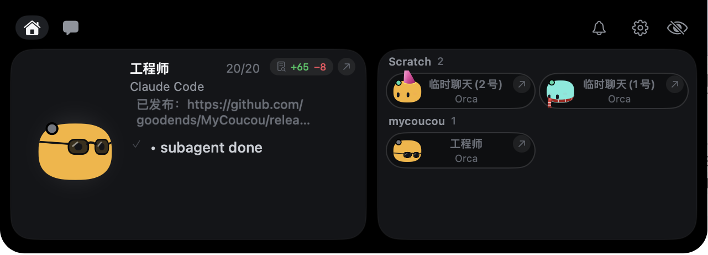

A tiny friend that lives in your notch
MyCoucou watches your AI coding agents — Claude Code, Codex, Cursor, Gemini CLI, Antigravity, Hermes and more — lets you approve Claude Code and Codex requests from the notch, chat with Anthropic, Google AI or OpenAI, and keeps an eye on Stripe, GitHub, Vercel, n8n and more. Free and open source.
Download for MacView on GitHub

Requires macOS 15 or later. No notch? Mochi sits in a small bar at the top of the screen. With several displays, pick Mochi's screen in Settings → General, or let him follow your mouse.